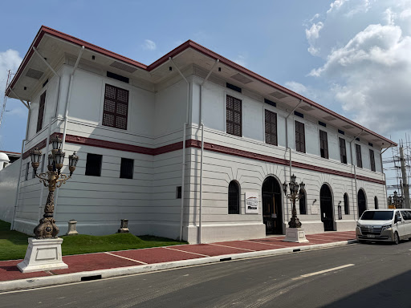

The Sorsoganons
Warm, generous, rooted in tradition
The people of Sorsogon are predominantly of Malay descent with deep ties to the Bikol ethnic group. They speak Sorsogon Bikol, a distinct dialect of the Bikol language family, and are known throughout the Philippines for their exceptional warmth and hospitality.
Catholicism shapes the rhythm of daily life through feasts, novenas, processions, and fiestas that honour patron saints in every barangay. The indigenous spirit of bayanihan — communal cooperation — remains alive in rural communities.

Arts & Crafts
Traditional arts
Sayaw Sinulog
A ritual dance performed during religious festivals, with flowing movements and colourful costumes honouring the patron saint.
Bikol Folk Music
Traditional kundiman ballads and folk songs passed down through generations, performed during fiestas and community gatherings.
Abaca Weaving
Local artisans weave abaca (Manila hemp) fibre into bags, mats, and decorative items — a sustainable, distinctly Sorsoganon craft.
Bamboo Craft
Furniture, baskets, and decorative objects crafted from native bamboo blend utility with quiet artistic expression.
Boat Building
Coastal communities in Barcelona and Matnog hand-craft wooden bangka outrigger boats — essential to the fishing economy.
Culinary Tradition
Food is central to Sorsoganon culture. Communal feasts during fiestas showcase recipes passed through families over generations.
Language
Bikol phrases
| Bikol Phrase | English Meaning |
|---|---|
| Mabuhay! | Welcome! / Long live! |
| Salamat | Thank you |
| Kumusta ka? | How are you? |
| Magayonon an lugar | The place is beautiful |
| Padagos lang | Continue / Keep going |
| Nag-aadal ako | I am studying |